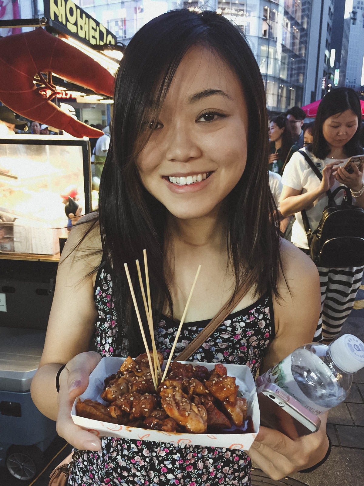

Japan & Korea
After 3 months into dating, Dan and I decided to take a trip together to Japan and Korea. Japan was always on my list of places to visit one day, but I didn't think that I'd be visiting so soon. I had just finished my semester for the summer, we had just adopted Skip, and we were due to fly out within the week. We made our arrangements for Skip, packed our bags, and off we went!
We first landed in Tokyo and from the minute we arrived, I felt like I had been transported into the future. Everything was so efficient, so clean, and felt so modern. We checked into our airbnb in Shibuya and immediately I could tell that their standard of living was much different than that in Toronto. Space was sparse, so everything was combined together as much as efficiently possible. The washroom in its entirety was a shower, sink, and toilet all in one. The kitchen was enough for one person where the microwave was atop of the fridge and the bedroom had no closet, but was oriented in a way where suitcases would fit just right. It made me realize how often I take open space for granted.
The next day, we woke up bright and early for Tokyo Disneyland. We wanted to get there for the park opening since I had read that lines would be extremely long, so instead of transit, we opted for Uber. Our Uber driver showed up in a suit, which we thought was very interesting, and after a 40 minute drive, we were at Tokyo Disneyland! Dan later realized that Uber has charged him 100$ CAD for the ride. Note to self: Uber is extremely expensive in Tokyo.
Tokyo Disneyland had two parks: DisneySea and Disneyland Tokyo. Since we only had time for one park, we opted to go to DisneySea since it is exclusive to Japan. As soon as the doors opened, people RAN to Toy Story Mania, and within minutes of lining up, hundreds of people were swarmed around us, as if we were at a concert. After waiting for 20 minutes, we finally got a fast pass for Toy Story Mania but it was for 5:00pm, by which time we would have left the park. Instead, we enjoyed the other areas of the park. The disney trends in Japan are very different from the American trends. For one, Duffy was a main character in Disneyland Japan and was plastered everywhere alongside Mickey. Another trend were their passholder lanyards; almost every guest there had a decorative lanyard with matching passholders. Many guests also wore decorative popcorn buckets similar to those sold in the US. There was a Stitch one that I really wanted and so I plucked up my courage and used my minimal Japanese to ask where I could get one. Overall, I was very fulfilled.
Our next stop was out of the city to the heart of Kyoto. The bullet train took us across half their country at the speed of light and was a very effortless and wonderful experience. The language barrier was never a huge issue in Japan and I believe that's one of the reasons as to what makes Japan so appealing to foreign countries. Kyoto was the polar opposite of Tokyo; quiet, serene, and ever so beautiful. If I were to live in Japan, I would choose somewhere like Kyoto to settle, somewhere away from the hustle and bustle.
Koyasan was next on our list. We took multiple trains to the top of the mountain where we stayed at a Ryokan. Up until that point, I had thought Kyoto was quiet and serene, but Koyasan proved that there were places even more so. We changed into our traditional Japanese garments and roamed around the temple in the evenings, listening to the monks and their prayers. Dinner was a typical vegetarian buddhist meal and to be honest, Dan and I didn't know what we were eating half the time. We appreciated that the food we ate in Japan always seemed so clean, fresh, and healthy. I definitely lost a good 20lbs amongst all the walking and clean eating.
Next, we took a quick day trip to Hiroshima. It just so happened that we planned our trip around August 6th, the date that the United States dropped a nuclear bomb onto Hiroshima and Nagasaki in 1945 during the second world war. Our day trip took us to the location the bomb was dropped in Hiroshima where an annual festival took place to commemorate the lives lost that day. Everyone who chose to participate in the festival were given paper lanterns to decorate with their prayers, which were then released into the river at the Hiroshima Peace Memorial Park. Though the sun was out, it was a solemn day with many tears and prayers among crowds. Though I was not directly affected by the tragedy that happened that day, I could feel the sorrow eminating from the thousands around me. To this day, I continue to pray for a world without suffering.
After a long trip home and a night with minimal sleep, we were up early for our flight to Korea. Peach Airlines was a quaint and small airline and knowing that there was a very strict luggage policy, we had to store our bigger piece of luggage in a storage locker to pick up upon our return. Luckily, Japan has everything thought out in terms of convenenience, and luggage lockers are easily accessible at many major train stations and airports. We stowed our bigger piece of luggage in one of the lockers for a decent price, and off we went to Seoul.
Upon reaching Seoul, we made our way out of the airport and to our hotel, The Westin Chosun. Up until that point, I had never experienced luxury quite like The Westin Chosun. Our suite was massive, the bathroom was breathtaking, and the hospitality offered at the hotel was superb. I felt extremely underdressed walking in with a tank top and jean shorts while the hotel staffed offered to help me with my belongings in well-tailored suits and dresses.
We explored Seoul only in two day's time, but it was enough to experience the culture of South Korea. Night markets in MyeongDong were lively and rich with shopping being amazing (free masks as you enter a beauty store? yes please.) We also visited a palace in the heart of Seoul. For a short trip, I was thoroughly impressed and in awe.
Making our way back to Japan for the final stretch, we decided to head over to the fish market to see the fish auction. We had to wake up for 3am to join a waiting list for the auction at 6am. Following the auction, we had breakfast at one of the most touristy restaurants at the fish market (the name is escaping me...), but after a 2.5 hour wait, my taste buds thanked me. The sushi melted in your mouth like butter, and I can still taste the texture in my mouth to this day.
All in all, Japan and Korea surprised me. I knew that I would find myself there one day and had no expectations of how it would go, but it is safe to say that it was a trip that opened my eyes to a side of asian culture that I had no idea existed. I have grown a fond appreciation of the Japanese culture, after experiencing what Japan had to offer. I suspect that I will find myself there multiple times in the future. Until then!


